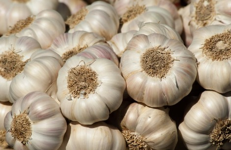

Benefits of Garlic:
🩸 Improves blood circulation — enhances immune response by increasing blood flow.
🌟 Detoxifies the body — flushes out toxins, reducing stress on the immune system.
🛡️ Boosts white blood cells — stimulates production of immune cells that fight infection.
Ways to Use Garlic:
✅ Raw Garlic (for daily immunity boost)
✅ Garlic & Honey Mix (for infections & immunity)
✅ Garlic Tea (for cold & flu relief)
Precautions:
🚫 Use garlic in moderation — excessive use may:
⚠️ Cause heartburn or upset stomach
⚠️ Lower blood pressure — caution for those on medication
⚠️ Not be suitable for pregnant women without consulting a doctor